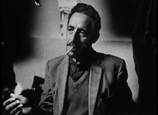

|
LES HOMMES DEBOUT (Men Standing)
Jérémy Gravayat | F 2010 | 75 min.
Material: Super-8, DV
Format: Beta SP
Original language: French, Arabian
Camera: Jérémy Gravayat
Editing: Jérémy Gravayat
Sound: Jean-Baptiste Fribourg, Gil Savoy
With Hassan Guaid, Romuald Fogoli, Amor Boughanmi
Production: Les Inattendus
Print/Sales: Les Inattendus
www.inattendus.com
Special Mention, FID Marseille 2010
Celebrating workers’ memories isn’t simple. A challenge that Jérémy Gravayat boldly takes on in this first film. He takes the risk of impurity of black and white mixed with colour that indicates the fogging of expected chronologies and presences so obvious that another method is required to make them buzz. The impurity of a filiation which dares lean on old immigrant workers in the figure of young wandering men turned into vagabonds. The impurity of the confrontation between archives and images today. The impurity of sonic echoes that, above all, seem to be the real guides in a film which craftily plays with its structure in the form of a refrain linking yesterday with today. The standing men of the title reeled at first. To the beat of their alienation, of their relegation, of yesterday, of today, to the beat of songs recorded on cassettes and old records. Their speech or their silence take on a posture (to some extent) in these refrains, but it allows the image to find complicities, and the film to advance without a safety rail. – Jean-Pierre Rehm
Jérémy Gravayat, director of documentaries, fiction films and film essays. His films are about forms of exiles, as a result of war, poverty or global politics. He works as a cutter for various film projects and at Basses Lumières, Les Inattendus and Dérives in France.
Films (selection): 2010 Les Hommes Debout | 2008 Vivre ici | 2006 L'Europe après la pluie | 2002 Un autre jour sur la plage | 2001 La rencontre
back
|